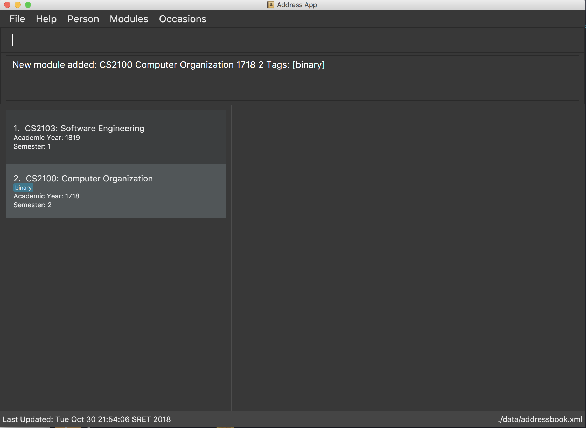
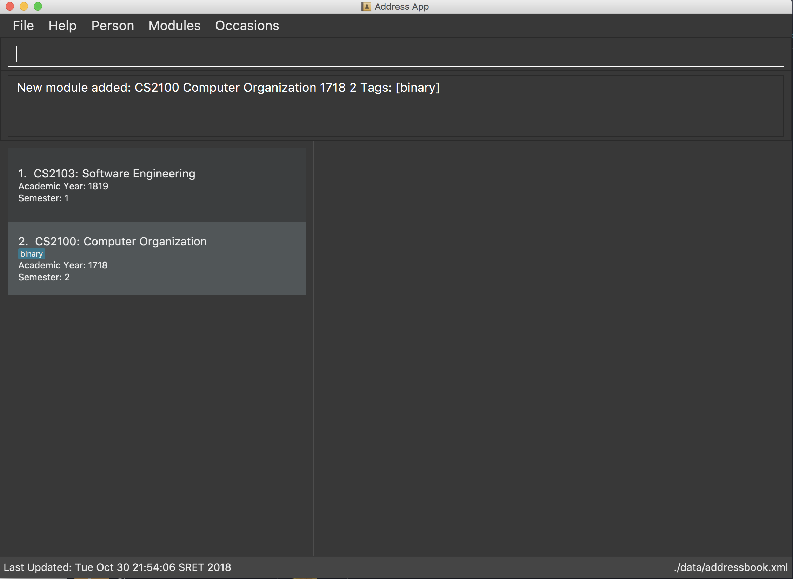

By: Team W10-01 Since: Aug 2018 Licence: MIT
- 1. Introduction
- 2. Quick Start
- 3. Features
- 3.1. Viewing help :
help - 3.2. Adding an entry:
add - 3.3. Editing an entry :
edit - 3.4. Locating entries:
find - 3.5. Deleting an entry from active list:
delete - 3.6. Undoing previous command :
undo - 3.7. Redoing the previously undone command :
redo - 3.8. Grouping content together by tag:
group(coming in v 2.0) - 3.9. Listing all entries of this kind:
list - 3.10. Showing command history:
history - 3.11. Autocomplete (coming in v 1.4)
- 3.12. Exporting data in this application (coming in v 1.4)
- 3.13. Importing module information from external platform:
importmodule(coming in v 2.0) - 3.14. Exiting the program :
exit - 3.15. Saving the data
- 3.16. Autocomplete (coming in v 1.4)
- 3.17. Import module information from external platform:
importmodule(coming in v 2.0)
- 3.1. Viewing help :
- 4. FAQ
- 5. Command Summary
1. Introduction
TheTracker is for NUS students who prefer to use a desktop app for managing contacts, events or modules. More importantly, TheTracker is optimized for those who prefer to work with a Command Line Interface (CLI) while still having the benefits of a Graphical User Interface (GUI). If you can type fast, TheTracker can get your contact management tasks done faster than traditional GUI apps whilst being able to keep track with your friends! Interested? Jump to the Section 2, “Quick Start” to get started. Enjoy!
2. Quick Start
-
Ensure you have Java version
9or later installed in your Computer. -
Download the latest
addressbook.jarhere. -
Copy the file to the folder you want to use as the home folder for your Address Book.
-
Double-click the file to start the app. The GUI should appear in a few seconds.
 

-
Type the command in the command box and press Enter to execute it.
e.g. typinghelpand pressing Enter will open the help window. -
Some example commands you can try:
-
listmodules: lists all modules -
addperson n/John Doe t/98765432 t/johnd@example.com t/John street, block 123, #01-01: adds a contact namedJohn Doeto the Address Book. -
delete 2: deletes the 2nd entry in the active list -
exit: exits the app
-
-
Refer to Section 3, “Features” for details of each command.
3. Features
Command Format
-
Words in
UPPER_CASEare the parameters to be supplied by the user e.g. inadd n/NAME,NAMEis a parameter which can be used asadd n/John Doe. -
Items in square brackets are optional e.g
n/NAME [t/VALUE]can be used asn/John Doe t/friendor asn/John Doe. -
Items with
… after them can be used multiple times including zero times e.g.[t/TAG]…can be used ast/friend,t/friend t/familyetc.
3.1. Viewing help : help
Format: help
3.2. Adding an entry: add
|
A person, module or an occasion can have any number of tags (including 0) and in no particular order. |
3.2.1. Adding a person: addperson
Adds a person to TheTracker.
Format:
addperson n/NAME p/PHONE_NUMBER e/EMAIL_ADDRESS a/HOME_ADDRESS [t/TAG]…
Example:
-
addperson n/John Doe p/98765432 e/johnd@example.com a/311, Clementi Ave 2, #02-25 t/friends t/owesMoney
3.2.2. Adding a module: addmodule
Adds a module to TheTracker.
Format:
addmodule mc/MODULE_CODE mt/MODULE_TITLE ay/ACADEMIC_YEAR sem/SEMESTER [t/TAG]…
Example:
-
addmodule mc/CS2103 mt/SOFTWARE ENGINEERING ay/AY1718 sem/1 t/gg
3.2.3. Adding an occasion: addoccasion
Adds an occasion to TheTracker.
Format:
addoccasion on/OCCASION_NAME od/OCCASION_DATE loc/LOCATION [t/TAG]…
Example:
-
addoccasion on/discussion od/2018-01-01 loc/SoC t/project t/gg
3.3. Editing an entry : edit
Edits an existing person, module or occasion in TheTracker.
3.3.1. Editing a person : editperson
Edits an existing person in TheTracker.
Format:
editperson INDEX x/VALUE …
3.3.2. Editing a module : editmodule
Edits an existing module in TheTracker.
Format:
editmodule INDEX x/VALUE …
3.3.3. Editing an occasion : editoccasion
Edits an existing occasion in TheTracker.
Format:
editoccasion x/VALUE …
Common format:
Examples:
-
editPerson 6 p/91234567 e/johndoe@example.com
Edits the person of INDEX 6 in TheTracker: edits his phone to 91234567 and email address to johndoe@example.com. -
editModule 1 mc/CS1101S
Edits the module of INDEX 1 in TheTracker: edits the moduleCode to CS1101S. -
editOccasion 7 on/Barbecue od/2019-6-17 loc/NUS
Edits the occasion of INDEX 7 in TheTracker: edits the occasionName to Barbecue, edits the occasionDate to 2019-6-17, edits the occasionLocation to NUS.
3.4. Locating entries: find
3.4.1. Finding a person: findperson
Finds a person in TheTracker.
Format:
findperson n/NAME, findperson p/PHONE_NUMBER, findperson e/EMAIL_ADDRESS, findperson a/ADDRESS
Example:
-
findperson n/John Doe,findperson p/98765432,findperson e/johnd@example.com,findperson a/Clementi
3.4.2. Finding a module: findmodule
Finds a module in TheTracker.
Format:
findmodule mc/MODULE_CODE, findmodule mt/MODULE_TITLE, findmodule ay/ACADEMIC_YEAR,
findmodule sem/SEMESTER
Example:
-
findmodule mc/CS2103,findmodule mt/SOFTWARE,findmodule ay/AY1718,findmodule sem/1
3.4.3. Finding an occasion: findoccasion
Finds an occasion in TheTracker.
Format:
findoccasion on/OCCASION_NAME, findoccasion od/OCCASION_DATE, findoccasion loc/LOCATION
Example:
-
findoccasion on/discussion,findoccasion od/2018-01-01,findoccasion loc/SoC
3.5. Deleting an entry from active list: delete
Deletes the specified person, module or occasion in TheTracker.
Format:
delete INDEX
Examples:
-
delete 1
Deletes the 1st entry of the active list.
3.6. Undoing previous command : undo
A command to allow the user to undo previous commands.
Command Syntax:
undo:
This command will undo the user’s previous command.
undo [number]:
The number of commands you want to undo.
This command will undo a certain number of commands. The number should be at least 1. If the number exceeds the number of operations that has been done, the application will undo all the previous operations.
|
Undoable commands: those commands that modify the address book’s content ( |
Examples:
-
delete 1
list
undo(reverses thedelete 1command) -
select 1
list
undo
Theundocommand fails as there are no undoable commands executed previously. -
delete 1
clear
undo 2(reverses theclearcommand and thedelete 1command)
3.7. Redoing the previously undone command : redo
A command to allow the user to redo previously undone commands.
Command Syntax:
redo:
This command will redo the user’s previous undone command.
redo [number]:
The number of undone commands you want to redo.
This command will redo a certain number of undone commands. The number should be at least 1. If the number exceeds the number of operations that has been undone, the application will redo all the previous operations that have been undone.
Examples:
-
delete 1
undo(reverses thedelete 1command)
redo(reapplies thedelete 1command) -
delete 1
redo
Theredocommand fails as there are noundocommands executed previously. -
delete 1
clear
undo(reverses theclearcommand)
undo(reverses thedelete 1command)
redo 2(reapplies thedelete 1command and theclearcommand)
3.8. Grouping content together by tag: group (coming in v 2.0)
A command to allow the user to group students under a certain group tag.
Command Syntax:
group [group_name] [keyword]:
group_name: The name of this group of people.
keyword: n/NAME The name of the person you want to put in this group.
i/INDEX The index of the person you want to put in this group.
3.9. Listing all entries of this kind: list
Format:
* List Person : listperson
* List Module : listmodule
* List Occasion : listoccasion
3.10. Showing command history: history
A command to allow the user to see the history of commands used within the address book.+
Format: history
3.11. Autocomplete (coming in v 1.4)
A feature that gives a list of potential matches based on substrings of a result that a user types into any other command.
3.12. Exporting data in this application (coming in v 1.4)
Format: export FILEPATH
3.13. Importing module information from external platform: importmodule (coming in v 2.0)
A command to allow the user to import information from NUSMods.+
Format: importmodule [modulecode]
If the specified module in the current semester is not found, it will be imported with information extracted from NUSMods.
3.14. Exiting the program : exit
Exits the program.
Format: exit
3.15. Saving the data
Address book data are saved in the hard disk automatically after any command that changes the data.
There is no need to save manually.
3.16. Autocomplete (coming in v 1.4)
A feature that gives a list of potential matches based on substrings of a result that a user types into any other command.
3.17. Import module information from external platform: importmodule (coming in v 2.0)
A command to allow the user to import information from NUSMods.+
Command Syntax: importmodule [modulecode]
If the specified module in the current semester is not found, it will be imported with information extracted from NUSMods.
4. FAQ
Q: How do I transfer my data to another Computer?
A: Install the app in the other computer and overwrite the empty data file it creates with the file that contains the data of your previous Address Book folder.
5. Command Summary
-
Add Person
addperson n/NAME p/PHONE e/EMAIL a/ADDRESS [t/TAG]…
e.g.addperson n/John Doe p/98765432 e/johnd@example.com a/311, Clementi Ave 2, #02-25 t/friends t/owesMoney -
Add Module
mc/MODULE_CODE mt/MODULE_TITLE ay/ACADEMIC_YEAR sem/SEMESTER[t/TAG]…
e.g. ` addmodule mc/CS2103 mt/SOFTWARE ENGINEERING ay/1718 sem/1 t/gg ` -
Add Occasion
on/OCCASION_NAME od/OCCASION_DATE loc/LOCATION [t/TAG]…
e.g. ` addoccasion addoccasion on/discussion od/2018-01-01 loc/SoC t/project t/gg ` -
Clear :
clear -
Delete :
delete INDEX
e.g.delete 2 -
Edit Person :
editperson INDEX [n/NAME] [p/PHONE] [e/EMAIL] [a/ADDRESS] [t/TAG]…
e.g.editperson 1 p/91234567 e/johndoe@example.com -
Edit Module :
editmodule INDEX [mc/MODULE CODE] [mt/MODULE TITLE] [ay/ACADEMIC YEAR] [sem/SEMESTER] [t/TAG]…
e.g. `editmodule 1 mc/CS1101S ` -
Edit Occasion :
INDEX [on/OCCASION NAME] [od/OCCASION DATE] [loc/OCCASION LOCATION] [t/TAG]…
e.g.editoccasion 1 on/Barbecue od/2019-6-17 loc/NUS -
Find Person :
findperson n/NAME,findperson p/PHONE_NUMBER,findperson e/EMAIL_ADDRESS,findperson a/ADDRESS
e.g.findperson n/John Doe,findperson p/98765432,findperson e/johnd@example.com,findperson a/Clementi -
Find Module :
findmodule mc/MODULE_CODE,findmodule mt/MODULE_TITLE,findmodule ay/ACADEMIC_YEAR,findmodule sem/SEMESTER
e.g.findmodule mc/CS2103,findmodule mt/SOFTWARE,findmodule ay/AY1718,findmodule sem/1 -
Find Occasion :
findoccasion on/OCCASION_NAME,findoccasion od/OCCASION_DATE,findoccasion loc/LOCATION
e.g.findoccasion on/discussion,findoccasion od/2018-01-01,findoccasion loc/SoC -
List Person :
listperson -
List Module :
listmodule -
List Occasion :
listoccasion -
Help :
help -
History :
history -
Undo :
undo [NUMBER]
e.g.undo 1 -
Redo :
redo [NUMBER]
e.g.redo 1